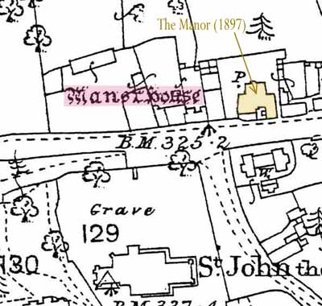

Wake's Manorial Seat
 Regarding the 15th century Blisworth Manor that was occupied by the Wake family, I misinterpreted the 1727 Grafton rent records when writing the Blisworth book. The site of the manor has indeed been supposed to the north of the church, according to the oldest Ordnance Survey map. The mapping of this area took place around 1835, when a converted tithe barn rented by Benedict Roper occupied the site. The map was not drawn at a sufficient scale to show "Manor House" at that place until 1885. The survey was carried out by qualified soldiers - thought by some to be a contradiction in terms when they began their protracted work but, in fact, they were from Companies of Royal Engineers and Miners. An archaeologist with them was charged with the task of keeping up with their theodolites and discovering items to include from learned tomes, the civil authorities, the landlords and church officials. I have found nothing in the church terriers about what may have occupied the site before the tithe barn, which was built in the second half of the 18th century. There is nothing definite in Bridges "History and Antiquities of Northamptonshire" (1791). There the manor is merely stated to be once near the church and have a park and warren associated with it. Similarly, the Grafton survey of 1705 associates the house with a park and warren. Both, as we know, are to the south of the church, so how did the Ordnance Survey come to place the house site to the north?
A document which Eileen Rose brought to my attention recently is more helpful however. It was written as notes by Wm. Taylor of Heyford and was used by Bridges is his compilation. Taylor visited the parish around 1719 and consulted the curate, Revd. Mr Bullyer who told him that there was "just one seat in the parish in which Mr. Plowman now lives and was formerly the dwelling house of Sir Robert Wake who owned the whole town - it is now upon ye Duke of Grafton's hold". The reference to Mr. Plowman was more than enough to divert interest towards the grounds of Blisworth House as a probable site for the 'seat' of the Wake family. There would have been more scope there for accommodating his retainers in a classic ring-fenced enclosure, when visiting Blisworth. It is fanciful of me but the immediate grounds of Blisworth House do seem to form a roughly circular plan. However, the maps since 1727, the earliest we have, show a succession of barns and stables built and demolished over the years so it would probably be pointless trying a geo-physics survey. No old stone foundations have been found there within living memory. Regarding Robert Wake, perhaps the Reverend Bullyer meant to say Roger Wake. There was a Robert Wake who might have rented a house from Sir Charles Knightly of Fawsley (purchaser from Wake's widow) as late on as 1570 - but no Wake since Roger in 1504 "owned the whole town".
At any rate, we now know of a documented reference to Blisworth House (or the grounds there) as the place where the Wakes had their "Seat". It seems that the Ordnance Survey had got it wrong.
There are no documents from the Ordnance Survey - all except those relating to a handful of counties were lost in the Blitz. In the 1830's, the surveyors would have Taylor's notes on arrival in Blisworth and would be keen to mark up the old "seat". But the 1702 Plowman date stone at the door of the house, now clearly visible, was covered by a large stone porch in 1825, see this photo from about 1900, and the last farmer Plowman, a William, had sold up by 1779. He, or his family was living in the house in the Stoke Road (that has been later named "Plowmans" by George Freeston.) Furthermore, The rector, Revd. Ambrosse, was probably absent and may well have been in prison, thus not available to help. My conjecture is that the Ordnance Survey team could find no Plowman's house but someone pointed out a farm called Manor Farm opposite the church, in the usual northerly position and the Ordnance Surveyor assumed it was the site of the 'old seat'. Coming forward to about 1897 we hear that a member of the Burbidge family took down a house called 'The Manor' just a very short distance to the east, along the High Street - it was probably a farm house and the buildings nearby, some farm buildings formerly including a short-lived tithe barn.
The first detailed version of the Ordnance Survey mapping, c. 1885 from which the inset above has been extracted, showed the "Manor Site" and this reference has been included up to approximately 1970 - but has now been dropped.